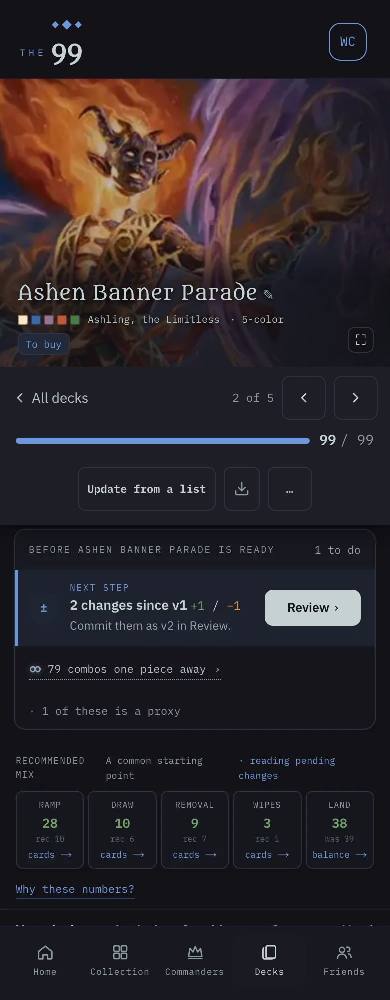
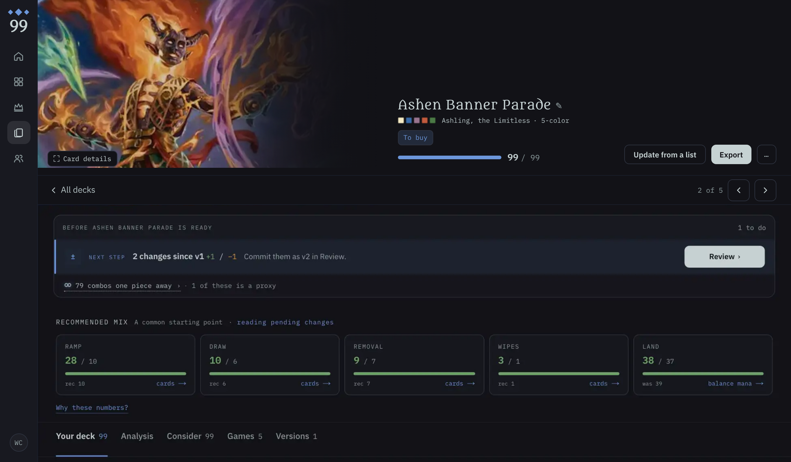

‹ All decks on the left, 2 of 5 ‹ › on the right. Phone: first row under the commander image, above the bar. Desktop: a row under the band. ← → on desktop.


Same strip at both widths. Squares 44px phone, 36px desktop, on the header’s ghost chassis. Tooltip “Next deck · Hollow Oak Hours (→)”.
Ends wrap. Hidden for a one-deck list, friend decks and precons. From a folder the link reads “‹ Simic”.
Order comes from the list as shown on /decks; a direct open falls back to All decks in the saved sort.